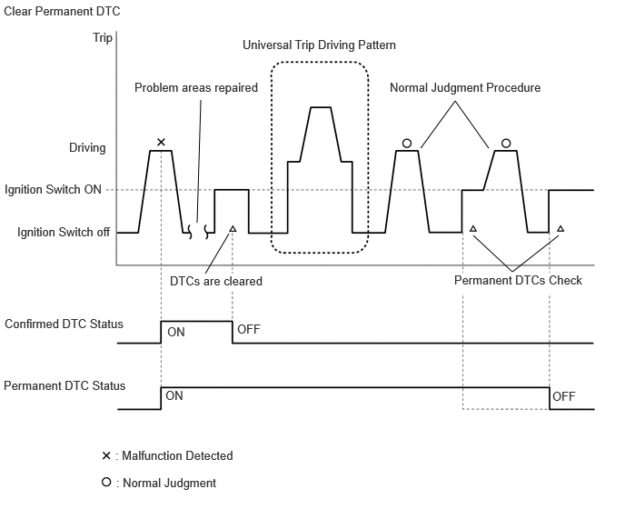
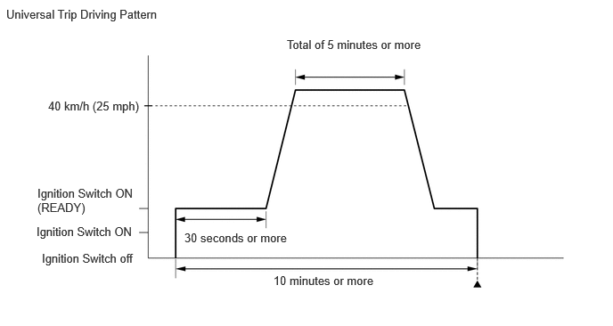

| Last Modified: 10-07-2025 | 6.11:8.1.0 | Doc ID: RM100000002K6A1 |
| Model Year Start: 2024 | Model: Tacoma HV | Prod Date Range: [03/2024 - ] |
| Title: HYBRID / BATTERY CONTROL: MOTOR GENERATOR CONTROL SYSTEM: DTC CHECK / CLEAR; 2024 - 2026 MY Tacoma HV [03/2024 - ] | ||
DTC CHECK / CLEAR
CHECK FOR DTC (SYSTEMS EXCEPT MOTOR GENERATOR CONTROL ECU)
HINT:
The motor generator control ECU maintains communication with other ECUs, such as the hybrid vehicle control ECU, ECM and skid control ECU assembly. Therefore, if the motor generator control ECU outputs a DTC, it is necessary to check for and make a note of any DTCs stored for other systems.
(a) If DTCs are stored, check the relevant systems.
HINT:
If DTCs for the CAN communication system are stored in addition to other DTCs, first troubleshoot and repair the CAN communication system malfunctions.
CLEAR PERMANENT DTC
OUTLINE
- After clearing current DTCs using the GTS (or by disconnecting the cable from the negative (-) auxiliary battery terminal), permanent DTCs can be cleared when the universal trip is performed and then the system is determined to be normal for the relevant DTCs. The driving pattern to obtain a normal judgment is described under the "Confirmation Driving Pattern" for the respective DTC.
- To clear permanent DTCs, all of the following
conditions must be met:
- There is a history that universal trip driving was performed.
- The vehicle has been judged as normal for 2 trips. (Normal judgment does not have to be performed in 2 consecutive trip, but normal judgment should occur in the latest trip.)
- No malfunctions are detected.
(a) Enter the following menus: Powertrain / Motor Generator / Trouble Codes.
Powertrain > Motor Generator > Trouble Codes
HINT:
If "YES" is displayed for the value of "PERMANENT" at the top right of the GTS screen, permanent DTCs are stored.
(b) Select the "Generic" tab.
(c) Check if permanent DTCs are stored.
HINT:
If permanent DTCs are not output, it is not necessary to continue this procedure.
(d) Clear the DTCs (even if no DTCs are stored, perform the clear DTC procedure).
Powertrain > Motor Generator > Clear DTCs
NOTICE:
Do not clear the DTCs or disconnect the cable from the auxiliary battery terminal after performing this step.
(e) Perform the universal trip.
CAUTION:
When performing the driving pattern, obey all speed limits and traffic laws.
HINT:
The universal trip driving pattern and normal judgment procedure can be performed consecutively in the same driving cycle.
 (1) Turn the ignition switch to ON (READY) and wait for 30 seconds or more.
(2) Drive the vehicle at 40 km/h (25 mph) or more for a total of 5 minutes or more.
HINT:
It is possible to complete the drive pattern even if the vehicle decelerates to less than 40 km/h (25 mph) during the driving cycle provided that the vehicle is driven at 40 km/h (25 mph) or more for a total of 5 minutes.
(3) Allow 10 minutes or more to elapse from the time the ignition switch turned to ON (READY).
(f) Turn the ignition switch off and wait for 2 minutes or more.
(g) Perform the normal judgment procedure in the respective confirmation driving pattern of each output DTC.
HINT:
Do not turn the ignition switch off by mistake during this step.
(h) With the ignition switch ON (READY) and wait for 5 seconds or more.
(i) Turn the ignition switch off and wait for 2 minutes or more.
(j) Turn the ignition switch to ON.
(k) Enter the following menus: Powertrain / Motor Generator / Trouble Codes.
Powertrain > Motor Generator > Trouble Codes
(l) Check that the permanent DTCs have been cleared.
HINT:
If permanent DTCs are not output, it is not necessary to continue this procedure.
(m) Perform the normal judgment procedure in the respective confirmation driving pattern of each output DTC.
HINT:
Do not turn the ignition switch off by mistake during this step.
(n) With the ignition switch ON (READY) and wait for 5 seconds or more.
(o) Turn the ignition switch off and wait for 2 minutes or more.
(p) Turn the ignition switch to ON.
(q) Enter the following menus: Powertrain / Motor Generator / Trouble Codes.
Powertrain > Motor Generator > Trouble Codes
(r) Check that the permanent DTCs have been cleared.
HINT:
- Permanent DTCs will be cleared if a normal judgment is obtained during 3 consecutive driving cycles with the MIL illuminated.
- The permanent DTCs are cleared when the universal trip is completed.
- If permanent DTCs are still present after the universal trip, turn the ignition switch off and wait for a while. Then, confirm that the permanent DTCs have been cleared.